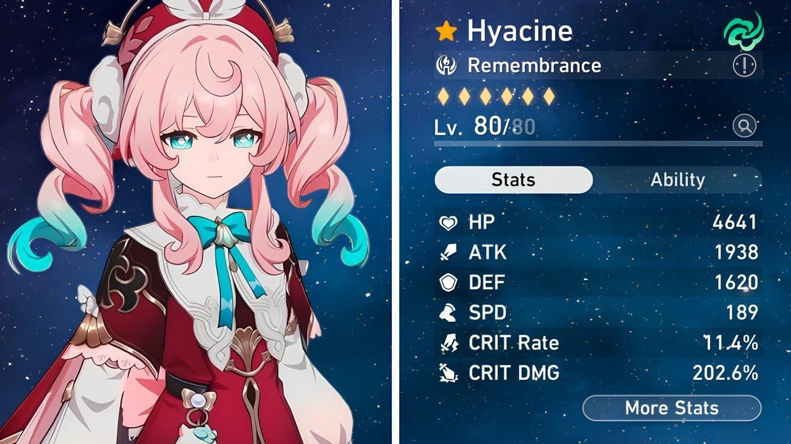

Pembaruan Honkai: Star Rail 3.3 Hadirkan Hyacine, Sang Penyembuh Unik dari Path of Remembrance

Honkai: Star Rail, permainan RPG yang sangat dinantikan oleh para penggemar, baru saja mengumumkan kehadiran karakter baru, Hyacine, dalam pembaruan versi 3.3 yang dijadwalkan rilis pada pertengahan Mei 2025. Karakter ini diharapkan dapat membawa dinamika baru dalam gameplay dan memperkaya pengalaman bermain bagi para pemain. Bagi kamu yang telah mengikuti perkembangan permainan ini, kehadiran Hyacine tentu menjadi kabar menggembirakan. Dengan mekanisme unik yang ia tawarkan, Hyacine berpotensi menjadi elemen penting dalam strategi permainan. Mari kita telusuri bersama segala hal yang perlu kamu ketahui tentang karakter istimewa ini melalui artikel berikut.
Profil Karakter Hyacine
Hyacine, atau nama lengkapnya Hyacinthia, adalah karakter bintang lima (5-star) dengan elemen Angin dan mengikuti Path of Remembrance. Dalam cerita permainan, ia dikenal sebagai seorang penyembuh yang bekerja di Twilight Courtyard dan merupakan pewaris dari Chrysos. Karakter ini pertama kali diperkenalkan dalam misi Trailblaze di versi 3.1, sehingga pengumuman kehadirannya sebagai karakter yang dapat dimainkan tidak sepenuhnya mengejutkan bagi kamu yang telah mengikuti alur cerita. Meski begitu, peran barunya tetap membawa antusiasme tersendiri.
Desain dan Kemampuan
Hyacine memiliki desain yang memikat dengan rambut merah muda yang mencolok dan sayap cahaya yang memberikan kesan anggun, mengingatkan pada karakter penyembuh lain seperti Barbara dari Genshin Impact. Ia bertarung bersama Memosprite-nya, seekor pegasus kecil bernama Ika, yang menambah daya tarik visual dan memperkaya mekanik permainan. Kemampuan Hyacine diperkirakan akan berfokus pada penyembuhan dan dukungan tim. Menariknya, meskipun ia berperan sebagai healer, ia tidak mengikuti Path of Abundance seperti kebanyakan karakter penyembuh lainnya. Hal ini membuka kemungkinan bahwa ia akan menjadi karakter sustain pertama di Honkai: Star Rail yang memiliki peran unik dalam komposisi tim.
Kemampuan Utama
Hyacine membawa kemampuan yang membedakannya dari penyembuh lain. Berikut adalah gambaran singkat berdasarkan informasi yang telah bocor:
- Penyembuhan: Sebagai healer, Hyacine dapat memulihkan HP anggota tim, baik secara individu maupun keseluruhan.
- DPS Sekunder: Ada spekulasi bahwa ia juga dapat berfungsi sebagai DPS sambil memberikan dukungan penyembuhan.
- Mekanisme Unik: Kemampuan “burning HP healer” yang membuatnya berbeda dari healer lainnya, memungkinkan ia mengorbankan sebagian HP-nya untuk menyembuhkan tim.
Gameplay dan Strategi
Hyacine adalah karakter bintang lima (5-star) dengan elemen Angin yang mengikuti Path of Remembrance. Sebagai penyembuh pertama dari jalur ini, ia membawa mekanisme unik yang memadukan kemampuan penyembuhan dengan efek debuff dan potensi kerusakan tambahan. Untuk memanfaatkan Hyacine secara optimal, berikut adalah panduan strategis yang dapat kamu terapkan.
1. Memahami Peran Hyacine
Hyacine berperan sebagai penyembuh tim (support healer) dengan mekanisme “burning HP healer.” Ini berarti ia dapat mengorbankan sebagian HP-nya sendiri untuk menyembuhkan anggota tim lainnya, memberikan dinamika baru dalam strategi permainan. Selain itu, ia juga dapat memberikan efek debuff kepada musuh, menjadikannya lebih dari sekadar penyembuh biasa.
Kemampuan Utama (Berdasarkan Bocoran):
- Skill Aktif: Menyembuhkan satu anggota tim atau seluruh tim sambil memberikan efek debuff pada musuh, seperti pengurangan serangan atau pertahanan.
- Ultimate: Penyembuhan AoE besar-besaran yang juga memberikan buff sementara kepada anggota tim, seperti peningkatan kecepatan atau resistensi elemen.
- Talenta Pasif: Kemampuan pasif Hyacine memungkinkan penyembuhan yang lebih efektif berdasarkan jumlah HP yang telah hilang oleh anggota tim.
2. Komposisi Tim yang Direkomendasikan
Untuk memaksimalkan potensi Hyacine, penting untuk membangun tim yang mendukung perannya sebagai penyembuh sekaligus pendukung (support). Berikut adalah rekomendasi karakter pendamping:
Karakter Pendamping yang Cocok:
- DPS Utama:
Seele (Quantum) atau Jing Yuan (Lightning): Karakter DPS dengan output kerusakan tinggi dapat memanfaatkan buff yang diberikan oleh Hyacine. - Debuffer:
Pela (Ice) atau Silver Wolf (Quantum): Debuffer dapat memperkuat efek debuff dari Hyacine, melemahkan musuh secara signifikan. - Tank/Defender:
Gepard (Ice) atau March 7th (Ice): Tank dapat melindungi Hyacine dari serangan langsung, memungkinkan dia fokus pada penyembuhan dan dukungan.
Contoh Komposisi Tim:
- DPS Utama: Seele
- Debuffer: Silver Wolf
- Tank/Defender: Gepard
- Penyembuh/Dukungan: Hyacine
3. Relik dan Light Cone yang Direkomendasikan
Pemilihan Relik dan Light Cone sangat penting untuk memaksimalkan performa Hyacine.
Relik yang Direkomendasikan:
- Fokus pada set Relik yang meningkatkan kemampuan penyembuhan dan regenerasi energi.
- Passerby of Wandering Cloud: Meningkatkan kemampuan penyembuhan.
- Substat Prioritas: Kecepatan, Efektivitas Penyembuhan, dan Regenerasi Energi.
Light Cone yang Cocok:
- Pilih Light Cone dari Path of Remembrance yang meningkatkan efek penyembuhan atau memberikan buff tambahan kepada tim.
- Contoh Light Cone: “Memories of the Past” – Meningkatkan regenerasi energi dan akurasi debuff.
4. Strategi dalam Pertempuran
Hyacine memiliki gaya bermain fleksibel, memungkinkan kamu menyesuaikan strategi sesuai kebutuhan pertempuran.
Panduan Umum:
- Gunakan skill aktif untuk menyembuhkan anggota tim yang membutuhkan sambil memberikan debuff kepada musuh.
- Simpan Ultimate untuk momen kritis, seperti ketika seluruh tim membutuhkan penyembuhan besar-besaran atau saat menghadapi serangan AoE dari bos.
- Manfaatkan sinergi dengan karakter lain untuk memaksimalkan efek debuff dan buff.
Melawan Bos dengan HP Tinggi:
- Gunakan Ultimate secara strategis untuk menjaga kelangsungan hidup tim selama fase serangan berat dari bos.
- Kombinasikan dengan debuffer seperti Pela untuk melemahkan bos secara efektif.
Lore dan Cerita
Hyacine adalah karakter baru yang diperkenalkan dalam Honkai: Star Rail, yang akan hadir sebagai karakter bintang lima di versi 3.3. Berikut adalah latar belakang cerita Hyacine berdasarkan informasi yang tersedia.
Latar Belakang Cerita Hyacine
Hyacine, atau Hyacinthia, adalah seorang penyembuh yang memiliki peran penting dalam dunia Honkai: Star Rail. Ia adalah pewaris dari Chrysos dan bertugas menjaga Sky Coreflame, yang merupakan elemen vital dalam menjaga keseimbangan di dunia. Dalam cerita, ia beroperasi di Okhema’s Twilight Courtyard, sebuah tempat yang menjadi pusat pemulihan dan pengobatan.
Peran dan Tugas
Sebagai kepala perawat di Twilight Courtyard, Hyacine bertanggung jawab untuk merawat dan menyembuhkan para pengembara yang terluka akibat konflik dengan Titans. Ia dikenal karena dedikasinya untuk membantu orang lain dan berusaha menyatukan kembali batas antara senja dan fajar yang telah terkoyak akibat kekacauan yang ditimbulkan oleh Titans. Hyacine juga merupakan bagian dari kelompok karakter yang dikenal sebagai Chrysos Heirs, yang lahir dari darah emas setelah Titans of the Eternal Land jatuh. Dalam lore permainan, ia memiliki hubungan erat dengan Memosprite-nya, seekor pegasus kecil bernama Ika, yang membantunya dalam tugas sehari-hari.
Keterlibatan dalam Cerita
Hyacine pertama kali diperkenalkan dalam Golden Epic Trailer – “Amphoreus’ Saga of Heroes” dan muncul dalam misi Trailblaze di versi 3.1. Dalam misi tersebut, ia berperan sebagai penyembuh yang membantu Trailblazer dan karakter lain dalam mengatasi berbagai tantangan. Dalam narasi permainan, Hyacine menyatakan komitmennya untuk memenuhi tugasnya sebagai Flame-Chaser dan berjanji untuk melakukan yang terbaik dalam menolong semua orang. Dengan latar belakang ini, karakter Hyacine tidak hanya berfungsi sebagai healer, tetapi juga sebagai simbol harapan dan pemulihan di dunia Honkai: Star Rail.
Kelebihan dan Kekurangan Hyacine
Kelebihan:
- Penyembuh fleksibel dengan kemampuan debuff.
- Cocok untuk berbagai situasi pertempuran, termasuk konten endgame seperti Simulated Universe atau Forgotten Hall.
- Memberikan variasi baru dalam strategi permainan dengan mekanisme “burning HP healer.”
Kekurangan:
- Membutuhkan sinergi tim yang baik agar potensinya maksimal.
- Bergantung pada Relik dan Light Cone yang tepat untuk performa optimal.
- Mungkin kurang efektif jika digunakan tanpa karakter DPS kuat dalam tim.
Antusiasme Komunitas
Pengumuman Hyacine telah menciptakan gelombang antusiasme di kalangan komunitas Honkai: Star Rail. Banyak pemain sudah mulai menabung Stellar Jade untuk mendapatkan karakter ini saat dirilis. Diskusi mengenai kemampuan dan potensi sinerginya dengan karakter lain telah menjadi topik hangat di forum-forum permainan, menunjukkan betapa besarnya ekspektasi terhadap kehadiran Hyacine.
Kesimpulan
Kehadiran Hyacine sebagai karakter baru di Honkai: Star Rail versi 3.3 adalah tambahan yang sangat dinantikan oleh para penggemar. Dengan desain unik, kemampuan inovatif, dan peran penting dalam cerita, Hyacine diharapkan dapat menjadi favorit baru di kalangan kamu yang bermain. Pembaruan ini tidak hanya menjanjikan pengalaman bermain yang lebih variatif tetapi juga memperdalam lore dan interaksi antar karakter dalam dunia Honkai: Star Rail. Dengan semua informasi ini, para pemain semakin tidak sabar untuk menyambut rilis versi 3.3 dan menjelajahi potensi penuh dari karakter baru ini! Untuk memastikan kamu siap menyambut Hyacine melalui gacha, lengkapi Stellar Jade-mu dengan Top Up Honkai Star Rail (HSR) di Topupgim prosesnya cepat, aman, dan membantu kamu mempersiapkan tim terbaik untuk karakter penyembuh istimewa ini!